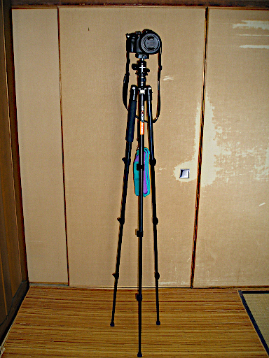

すみません。記事にするほどの内容ではないのですが。
ふと思いついたのですが脚と脚の間隔が 30cm くらいしか開かない三脚でエンドフックがついていて重りをつけることができる三脚があれば Velbon Pole Pod III のような製品は駆逐されるんじゃないかと。
なので手持ちの K&F Concept KF-TM2324 で脚と脚の間を 30cm 未満にしてエンドフックに 2kg の重りをつけて立ててみて 1kg 未満の LUMIX ですが乗せて試してみました。

普通の脚を広げた状態よりは不安定ですが Velbon Pole Pod III と同程度には安定しています。もちろん風が吹いてなければという条件がありますけど。でも風があったら不安定になるのは Velbon Pole Pod III も同じですし、写真では重りをぶら下げていますが重りを地面に置いて重りとエンドフックを自在結びで結びつけたら風が吹いてもだいぶ安定します。これはちょっとまずい発見をしてしまったんじゃないでしょうか。
中国メーカーあたりが脚と脚の間隔が 30cm 以上開かずエンドフックがついている挟脚三脚なるものを開発してしまったりすると脚付き一脚は駆逐されてしまいそうです。いや共存できるかな？Velbon Pole Pod III のような製品は後ろから見ると視界を遮りませんから運動会とかで他人にウザがられにくい。それだけが脚付き一脚の生き残る道かも。
ところでなぜ中国メーカーなのかというと、こんな売れるかどうかわからないリスキーだけど売れれば世界を獲れる製品を作るのは中国メーカーくらいしかないからです。日本のメーカーはリスクを取れないので無理でしょう。日本のメーカーだと馬鹿げてると一笑に付して終わりでしょう。どっちが終わりなんだか。